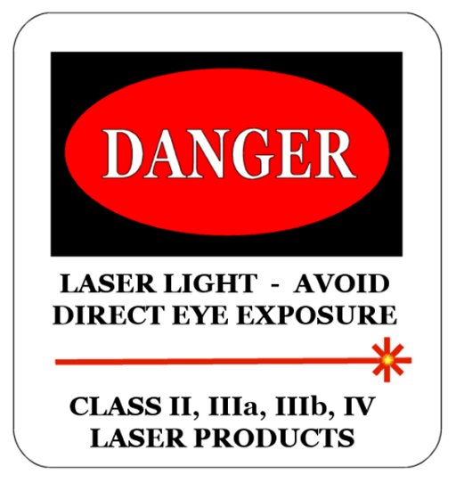

Surse convenabile de lumină
Mulţi paşi s−au făcut în înţelegerea şi controlul luminii, folosind doar lumina lumânărilor.
Astăzi însă ai la îndemână surse de lumină mult mai convenabile.
O lanternă poate fi aprinsă şi stinsă prin simpla apăsare a unui buton. Aceasta trimite un fascicul intens de lumină sub forma unui con. Poţi vedea foarte
clar forma fasciculului într−o seară cu ceaţă sau în apa unui acvariu în care ai pus câteva picături de lapte.
Din păcate, fasciculul este larg de îndată ce părăseşte lanterna şi este din ce în ce mai larg, pe măsură ce se îndepărtează.
Este un fascicul
larg şi divergent.
Un fascicul mai subţire şi mai puţin divergent ţi−ar fi mai util pentru a putea controla direcţia luminii.
 Activitatea experimentală 1
Activitatea experimentală 1
Îmbunătăţeşte calităţile fasciculului de lumină al unei lanterne.
Pasul 1. Înlocuieşte sticla lanternei cu un disc de carton, având acelaşi diametru, în care ai decupat o fantă radială, lată de 2...3 mm
(figura 1).
Fig. 1.  Disc cu fantă radială.
Disc cu fantă radială.
Pasul 2. Observă lărgimea şi divergenţa fasciculului în aceste condiţii. Ai obţinut îmbunătăţiri?
O sursă de lumină şi mai convenabilă este un indicator laser (figura 2).
laser pointer).'); return false" >
Fig. 2.
Indicator laser (laser pointer).
Deşi sunt mai mici decât lanternele, indicatoarele laser emit lumină foarte strălucitoare, mult mai strălucitoare decât Soarele!
din acest motiv, pe acestea sunt aplicate etichete de avertizare (figura 3).

Fig. 3.
Eticheta de avertizare a unui indicator laser.
 Atenţie! Trebuie să eviţi să−ţi pătrundă direct în ochi lumina acestor lasere!
Atenţie! Trebuie să eviţi să−ţi pătrundă direct în ochi lumina acestor lasere!
Când lucrezi cu un indicator laser, respectă aceste reguli simple:
Activitatea experimentală 2
Observă calităţile fasciculului laser.
Pasul 1. Fixează un indicator laser, cu un magnet, pe corpul metalic al unei lanterne (figura 4).
Fig. 4.
Fixarea magnetica a indicatorului laser.
Acest mod de fixare îţi permite să orientezi indicatorul laser în direcţia dorită.
Pasul 2. Orientează laserul spre apa dintr−un acvariu în care ai pus câteva picături de lapte. Asigură−te că laserul nu este îndreptat
spre ochii cuiva!
Pasul 3. fixează butonul laserului, cu bandă adezivă, pe poziţia "pornit", sau prinde laserul într−o clemă metalică pentru documente (sau
chiar un cârlig de rufe) care să preseze butonul.
Observă fasciculul laserului. Compară−l cu cel al unei lanterne.
Pasul 4. Pune în evidenţă "ricoşarea" luminii la suprafaţa apei şi "frângerea" drumului său la pătrunderea în apă.
Ai acum o sursă de lumină care emite un fascicul strălucitor, foarte îngust şi foarte puţin divergent − o sursă aproape ideală, cu ajutorul căreia
poţi începe să înţelegi comportarea luminii.
Schimbarea direcţiei luminii la suprafaţa unui corp şi "frângerea" drumului său la pătrunderea într−un corp transparent sunt fenomene care merită
analizate îndeaproape, pentru că ne oferă posibilitatea modificării drumului luminii.